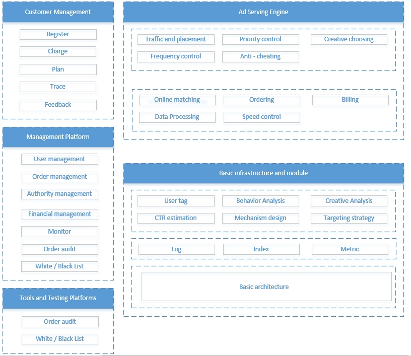

Ad Serving Engine Architecture
This article will explore deeper into the working principles of online ad delivery. This section first introduces the main functional modules and architecture of the DSP project I was participated.
1. Ad Serving Engine Architecture

As shown in Figure, the functional modules of the ad serving engine are divided into five parts: Customer Management, Internal Management Platform, Infrastructure, Internal Modules of the Ad Serving Engine, and Some Tools and Testing Platforms Used in Daily Work. This architecture diagram is not a standard design for ad serving engines; different media may have variations in their ad serving engines based on different business processes. The introduced functional modules here are just some commonly used modules.
2. Customer Management
The first part is the customer management for advertisers. Advertisers, who want to display ads, need to register an account with a unique identifier. After logging into the customer management with this account, advertisers can create their ad delivery plans. Advertisers also need to deposit funds into their accounts, and the ad system will only display ads under this account if there is a budget. In the customer management, advertisers can set detailed budget controls, such as the daily maximum spending limit. If the daily spending exceeds the set limit, the ad system will stop displaying ads under that account. Advertisers may have different marketing goals; some aim to reach as many people as possible, while others may focus on increasing the traffic to a specific store. Advertisers need to select their marketing goals in advance, allowing the ad delivery system to use different targeting algorithms for optimal results. Advertisers can specify audience ranges when setting up ad plans, such as targeting female users aged 20 to 30 in Beijing. Setting marketing goals and audience ranges appropriately can significantly enhance the effectiveness of promotional activities. After the ads start running, advertisers can track the ad plan's performance in the customer management's tracking module, checking metrics like current ad impressions and effectiveness. Based on feedback, advertisers can continue optimizing ad plan settings. Some customer managements support setting up multiple ad plans simultaneously and managing them in groups, facilitating advertisers to conduct multiple comparative experiments. In some cases, customer managements may provide adjustment suggestions for ad plans based on historical delivery data, further improving advertisers' operational efficiency.
Different marketing goals suit different types of advertisers. Large brand advertisers may prefer brand awareness, targeting a broad audience, while smaller advertisers may focus on conversion, suitable for marketing goals related to action conversion. In such cases, the ad system will only display ads when there is a high probability of action conversion, saving costs for advertisers. Additionally, advertisers need to set ad display formats and upload relevant materials. Some ad delivery systems may suggest advertisers set multiple sets of materials, allowing dynamic adjustments to ad styles and content during delivery, further enhancing ad delivery effectiveness.
3. Internal Management Platform
The second part consists of tools and platforms for internal use by operators and developers of the ad serving engine. This includes user management, order management, Authority management, financial management, performance monitoring, order audit, and black and white list modules. User management centrally manages all registered users in the system. Order management controls the status of advertiser orders, allowing manual intervention in the online/offline status of orders. Authority management sets different operation permissions for internal users, reducing system risks. Financial management handles advertiser account balances and system revenue. Performance monitoring allows viewing specific performance data for each ad plan, providing internal operators with real-time insights into system operations. In the order audit module, internal operators manually review materials submitted by advertisers. Only orders that comply with content standards and quality regulations can enter the system for delivery. Some ad systems may incorporate artificial intelligence technology to expedite this process. The black and white list module allows setting white lists for trusted accounts to increase priority and blacklists for repeatedly violating accounts, prohibiting delivery.
4. Infrastructure and Related Modules
The ad serving engine is a system with high performance requirements, requiring constant high system stability and quick response capabilities. When online requests arrive, the system needs to return suitable ad results in a very short time, usually ranging from a few milliseconds to a few hundred milliseconds. If the ad system fails to return an ad within this time limit, the request will not display any ads, and the system will not generate revenue.
The infrastructure involves two main parts. One is the online delivery system, which quickly processes all logic when a request arrives and returns appropriate ad results. To ensure service stability, online ad systems are generally deployed across data centers and networks to ensure continued service in case of failures in some data centers or network services. The other part is the big data processing module, required for computing and storing massive data. It supports functions such as log storage, real-time or offline analysis of ad data, and billing. If the ad system is triggered by keywords or certain targeting conditions, it also needs to continuously build indexes for legitimate ads in the system.
After the ad plan is delivered, advertisers can view specific delivery data in the customer management. However, some media may have instances of data falsification. Therefore, in high-value transactions, advertisers, to protect their interests, may want the ad serving engine to support third-party data monitoring. By adding code from third-party organizations in the delivery process, these organizations can gain insight into core metrics of ad delivery, providing a more objective evaluation of ad performance.
Different ad serving engines exhibit significant differences in ad delivery effectiveness. In addition to variations in media traffic quality, there will be notable differences in the scale and computing capabilities of business modules such as user profiling, behavior data analysis, creative analysis, CTR (Click Through Rate) calculation, mechanism design, and targeting technology. Small ad serving engines may only have a CTR calculation module, while mature large ad serving engines will have dedicated personnel researching each business module, continuously optimizing and improving the system from various perspectives to enhance overall media revenue. These modules not only serve the ad serving engine but may also provide guidance and suggestions to marketers throughout the marketing path based on historical data.
If an ad serving engine aims to provide advertisers with more operations, allowing advertisers who are clear about their target audience to precisely target them, the system needs to conduct more data analysis and organization. For example, if an advertiser wants to display car ads to male users in Beijing interested in military topics, the system needs to determine in advance which users are interested in military topics based on their historical behavior data. It also needs to accumulate demographic information about them, understanding details such as age and gender. This information is generally referred to as user profiles, and accurate and comprehensive user profiles significantly help enhance the targeting capabilities of the ad serving engine.
Regardless of the type of ad system, if the ad serving engine can accurately deliver ads to audiences interested in those ads, both the effectiveness of ad delivery and the profitability of the media will see substantial improvements. Therefore, developing high-precision CTR estimation and recommendation algorithms is crucial. This is a classic problem in online advertising algorithms that is still under continuous research. Factors calculated, such as how to integrate them into the system to maximize revenue, how to integrate while ensuring advertiser interests or fairness, and how to integrate while maintaining the ongoing health of the entire advertising business ecosystem, are all considerations in mechanism design.
5. Internal Modules of Ad Delivery Engine
Here, we will illustrate how the internal modules of an ad delivery engine work by examining a specific example of a search advertising system. When a user searches for "tomatoes" in a search engine, the system first invokes the frequency control module. If the system limits each user to view a maximum of 10 ads per day and the user has not reached this limit, the process continues.
The ad delivery engine, through the ad placement management module, determines what type of ads can be displayed on the current page. It then searches the corresponding type of ad index system to find ads that can be displayed. Subsequently, the system uses a series of parameters to determine which ads meet the display conditions and places all qualified legal ads in a legal ad queue. The ad with a depleted budget cannot enter the legal ad queue.
The sorting module calculates a sorting factor for each ad in the legal ad queue, using the formula bid × ctr. Here, bid is the cost advertisers are willing to pay for a click, set in the customer management, and ctr is the system's estimated probability of the ad being clicked by the user. Different ad delivery engines may have different sorting methods, such as introducing a smoothing factor to control advertiser spending smoothly during specific time periods. Based on the sorting factor, the winning ad is determined, and the system calculates the fee to be charged if the ad is clicked (generally less than the bid set by the advertiser). It's important to note that the ad is not charged at this point. The system then selects the optimal style to display the ad in the user's search results, considering the page's context or the ad's previous delivery performance. Sometimes, the style is incorporated as a factor influencing the sorting phase.
The sorting factor used is rankq = bid × ctr. Generally, the system selects the ad with the highest rankq as the final ad to be displayed. However, displaying the ad with the highest score each time may not necessarily maximize the system's revenue. In cases where resources and budgets are limited, and different ads have different delivery conditions, knowing all traffic information for a day often allows offline discovery of more profitable delivery methods. How to optimize the system's online matching strategy to increase revenue is generally described as an online matching problem.
Different ad delivery engines have their own business logic. For example, some systems support evenly distributing ads over a specific time period. To improve ad effectiveness and user satisfaction, some systems avoid repeatedly delivering the same ad or type of ad to the same user, strictly controlling the frequency of ad delivery to users.
During online delivery, various types of ads may simultaneously meet the delivery conditions. For instance, a traffic instance may simultaneously meet the targeting conditions for both brand ads and regular ads. In such cases, the system may give higher priority to brand ads, allowing them to obtain a better position in the sorting or have an exclusive opportunity for display, as brand ads can generate more revenue for the system. The priority control module is used to control the priority levels of different types of ads.
Where there is profit, there is also the potential for cheating. Addressing fraud is a challenge faced by many commercial systems, and ad delivery systems are no exception. The basic idea is to identify the differences between fraudulent and legitimate traffic, and then address them systematically. Details about fraud prevention are typically highly confidential, and the specific methods used by major companies to combat fraud are not publicly disclosed. Eliminating cheating entirely is challenging, and fraud prevention is an ongoing process of outsmarting fraudsters, continuously raising the bar for fraudulent activities.
6. Tools and Testing Platforms
In practical work, after the implementation of various online strategies, it is possible to determine whether their effects are positively enhancing or negatively impacting the system. However, not every change in effect can be explained. From frontend interaction changes to backend factor improvements and mechanism strategy design, there is often no comprehensive theory guiding us to make the most correct choices. In most cases, we cannot predict the trend of effect changes for new modifications in advance, especially since ads are often placed in many new scenarios, and new technologies are used in the system. Therefore, using A/B testing to guide developers in iteratively optimizing the system has become a common choice for major companies.